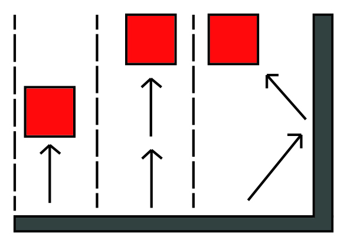

Level 2 - Side Scroller
Environmental forces and their effects
The character will be able to jump, double jump and wall jump. All of these will be based off of gravity and force will be applied in a horizontal direction when wall jumping. Falling objects such as false floors will also be based off of physics, as they fall, if they hit anything they will react properly like they would in real life when coming in contact with other objects.
Pictured below is an illustration of jumping, double jumping and wall jumping.
